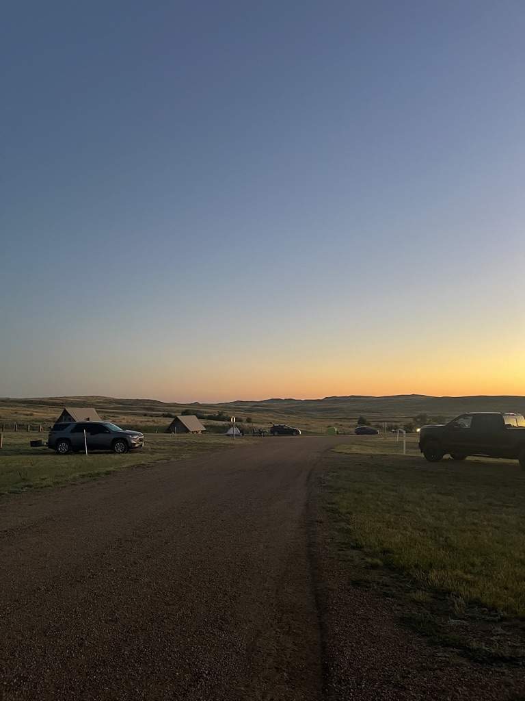
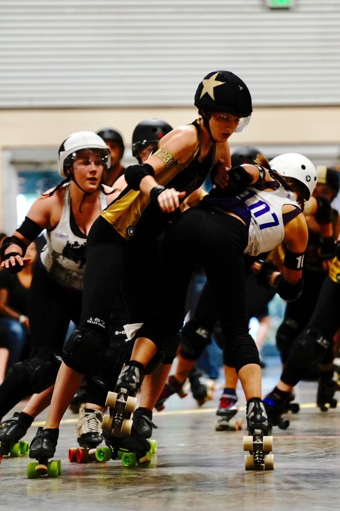

Hi, I’m Maëlle Magnan, an undergraduate student at the University of Toronto pursuing a degree in Astronomy and Physics with a minor in Mathematics. I currently serve as the Vice President of Communications for the Astronomy Union and act as an advisor for U of T’s Collective Undergraduate Research Experience (CURE).
My academic interests lie in both small-scale structures, such as stars and galaxies, and their formation and evolutionary processes, as well as in large-scale systems including black holes and the plasma dynamics in their surrounding environments.
Outside of academics, I enjoy hiking, cooking, and playing roller derby. I’ve played competitive roller derby since 2017!

